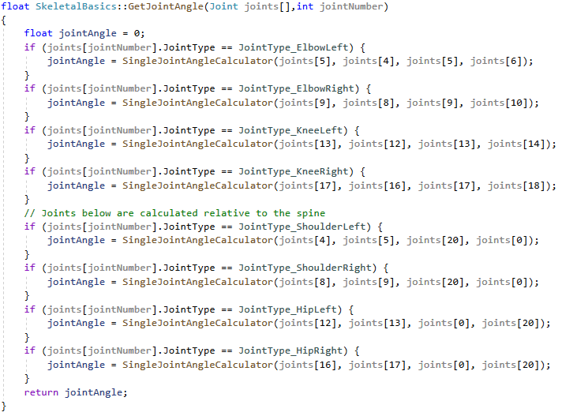
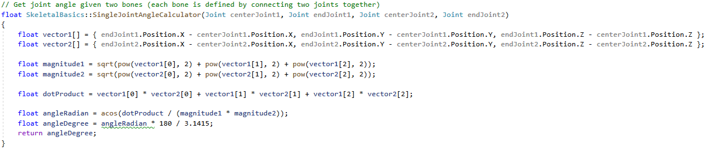

Design
System Architecture
This project uses an Apple Watch and a Kinect 2 to collect information about a dance session. We needed a place to store the collected data:
We decided to implement a server running on a virtual machine with Node.js and the express framework along with a MongoDB database.
We wanted the devices to automatically send the data to the server at the end of each session, which would then merge and display the information to the user.
Here is a detailed system architecture diagram of our system:

Kinect 2
We built the application for a Windows PC in Visual C++ and the latest Kinect SDK that uses the cameras and sensors in the Kinect 2 for Windows to detect, analyse, and display users' skeletal data. This Application communicates a JSON to the server at the end of each session (and stores the video in .avi format).
Apple Watch
The Apple Watch app was built in Swift: it measures user health metrics, then sends a JSON to the server at the end of a dance session.
Server and Database
Our server is built using NodeJS and our database uses MongoDB; it receives, merges, displays, and stores the JSONs from the Kinect and Apple Watch. It runs on a Linux Virtual Machine in Microsoft Azure.
Data Storage
Whithin our database, there are no relations (as it is a simple database) so there is no need for an entity relationship diagram in our case.
Here is the format of the JSONs stored:
| Session |
|---|
|
id: String watchDuration: Float minHeartRate: Float maxHeartRate: Float averageHeartRate: Float caloriesBurned: Float distanceTravelled: Float twists: int timeStamp: String kinectDurationInSec: Float avgJointDistanceMoved: Float maxLeftHandHeight: Float maxRightHandHeight: Float maxLeftKneeHeight: Float maxRightKneeHeight: Float |
Implementation of Key functionalities
JSON Merging with Verification
The server receives 2 separate JSON files each session: 1 from the Kinect, and 1 from the Apple Watch.
We need to merge the JSON files received by the server before displaying them.
We wanted to make sure that if any part of the system failed, no past sessions could be overwritten and we could not merge two files from two different sessions.
We started by choosing to delete the received JSONs after they'd been merged, but we were worried that if the system crashed before the files got deleted, it wouldn't be enough.
To remedy this, we added a user-entered session ID that needs to match in both JSON files in order for the merging process to happen:


The main problem with this algorithm is the introduction of the possibility of user error: if the user does not type the session ID properly, it could cause merging issues.
Apple Watch: Number of Spins

With the Apple Watch code, one of the key algorithms was implementing a function that would recordthe number of spins the user has made. The function motionData() measures and tracks this.
This function uses a variable called motion which is of type CMMotionManager. This allows us to recieve four types of motion data including Gyroscope, Accelerometer, Magnetometer and Device-Motion Data.
We set the device motion update interval, meaning how frequently it should measure values (over what period of time) to a constant that we have dervied works best after extensive testing.
Next, we start the device motion updates and every time we get an update, we check if the two sensors that we use, are in the range of our pre-define values. If yes, we classify the movement as a spins and increase the spins counter for the number of spins by one.
Kinect: Joint Angle
In the kinect code, we provide a function which let you calculate the angle of your joint by specific which joint you want. This is achieved by two ways, depends on what joint it is, for joints like elbow where you will need the co-ordinate of the adjacent joints which are the shoulder and the wrist joint. For joints like should, as the angle you want is actually the angle between the side of your body and the arm, so you can't just use the adjacent joint to calculate it, this is where the second way come to use, in this way, we will use two joints: upper spine and base spine to determine the position of your body, and caculate the angle between this line connected by two spine joints and the arm for example.
Then we have a joint angle calculator function which using vector math to determine the actual distance between these joints provided by their co-ordinate.
Implementation
The Apple Watch code works in the following way.
Initially all the variables are initialised and the application checks whether the user has granted it access to use the sensors and their medical data. If not, the application will prompt the user if they will allow this.
There is a global state variable, which tells functions whether the user is dancing or not. If currentState = 1, the session is active and if currentState = 0, the session is inactive. Whenever the session is active, a lot of background calculations are being run.
The Apple Watch will constantly record the user heart rate with the heart rate sensor along with getting accelerometer and gyroscope data. With this data it calculates the number of calories burned and distance travelled (which is implemented by Apple and an API is called for this) along with tracking the number of spins, which is implemented by us. It does this by using data from two of the sensors which is updates every 0.3seconds. This feature is implemented in the motionData() function.
After the user presses stop, the currentState will change and this button click will initiate the process for ending a workout. It will call on Apple's HealthKit API, to log the workout results into the Activity Application in a FHIR standard. The button will reset to display „Start Dancing“ again.
Kinect Implementation
We have a class called SkeletalTracking which include all of our Kinect code. In the main function, we first initialise the glut and OpenCV setting which are responsible for our video display and skeletal drawing. Then we call a series of OpenGL functions to initialise the textures of our display screen, then to setup the screen and camera. Then, we call the glut main loop: this calls all the functions we want to loop, as we call them inside the draw() function (which is defined as the default function that runs if the program is idle).
This video should then theoretically be saved in a .avi file at the end of the session.
The Kinect library provides us with an object called IBodyFrame which allow us to obtain the bodies inside the camera view, those bodies are stored in object called IBody which are returned as a list contain up to 6 IBody which is the maximum number of people Kinect can track at the same time. These IBody
can provides us the tracing state of this body and also joints data, includes joints X,Y,Z coordinates and their tracking state.
In the update function, we first call functions to acquire the latest frame and body data. If that process succeed, we enter a series of if conditions blocks, we currently have 3 blocks which represent the different part of the dance process, start from calibration session, then body process session, and the last one which is the summary session. After each session is finished, we set the condition of current block to false so that it fall into the next session.
In these functions, we are defining a position to let people move to next session without the need to touch any devices, the current position require you to raise both of your hands above the head for 3-5 seconds, this can be changed to any other position if needed.
Inside the calibration function, we are calculating the height of floor from the height of feet joint by letting user stand still for a few seconds, the purpose is to calculate joints data relative to the floor height as Kinect has its coordinate system relative to the camera instead of floor.
Then inside process body function, we now have activity level and max height functions. The activity level calculate the distance moved of each joint per frame by storing the previous frame data and compare it to the current frame. The max height function detect max height of joints (currently both hands and knees) by replacing any height that is higher than the current maximum.
Then in the summary session, we write those data obtained by the process body session and also local time data into a txt file.